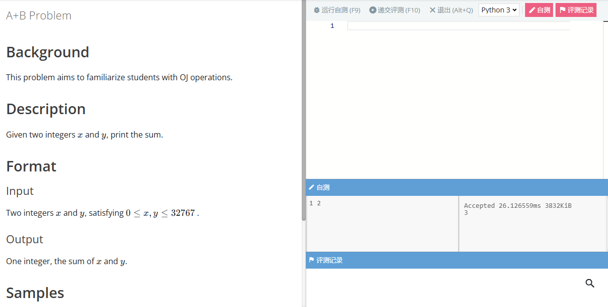
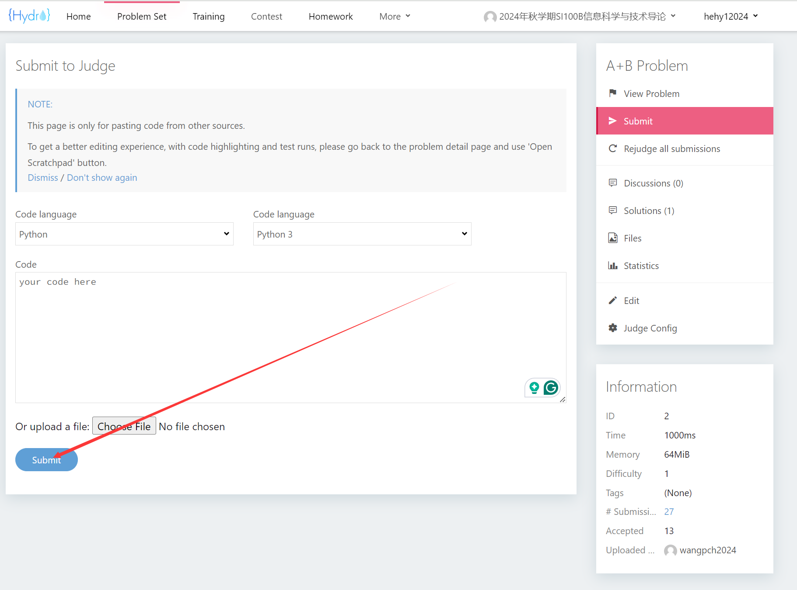
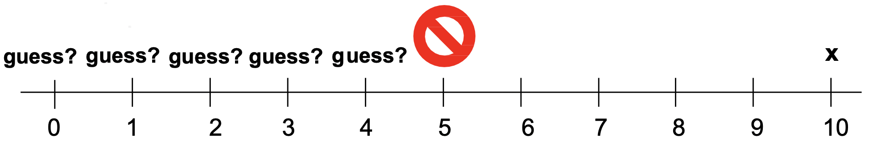
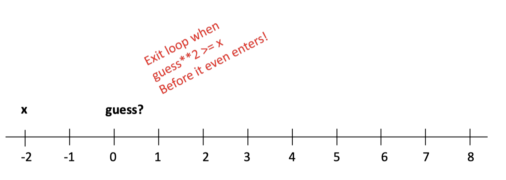
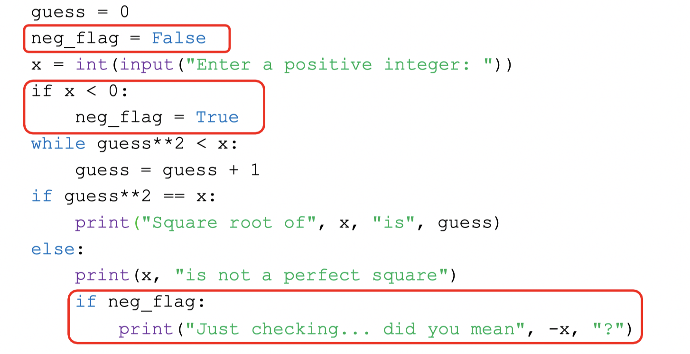
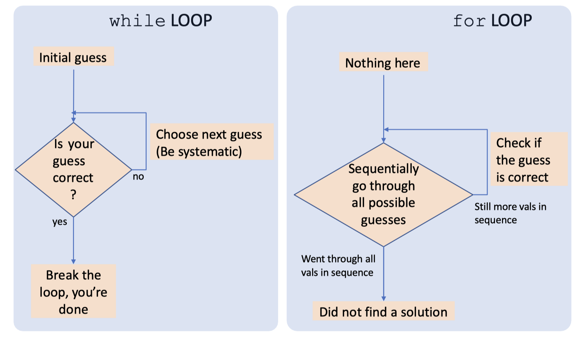
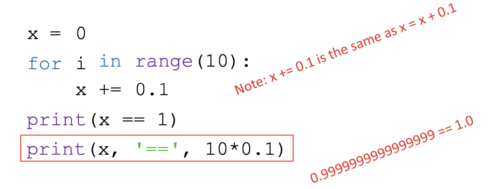

<p style="font-size: 16px; color: #999; margin:5px; position: absolute;"><a href="..">Homepage</a> | <a href="?print-pdf">Printable Version</a></p> <div style="display: flex; justify-content: center; align-items: center; height: 700px;"> <div style="text-align: center; padding: 40px; background-color: white; border: 2px solid rgb(0, 63, 163); border-radius: 20px; box-shadow: 0 0 20px rgba(0,0,0,0.1);"> <h1 style="font-size: 48px; font-weight: bold; margin-bottom: 20px; color: #333;">SI100B Fall 2025 Recitation 2</h1> <p style="font-size: 24px; color: #666;">L2, L3 课堂复习 & HW/OJ 简介</p> <p style="font-size: 16px; color: #999; margin-top: 20px; margin-bottom:5px">SI100B 2025 Staff | 2025-09-26</p> </div> </div> <!--s--> <div class="middle center"><div style="width: 100%"> # Homework & Online Judge </div></div> <!--v--> ## Homework & Online Judge - Homework 1 已发布 - 截止日期 (Deadline) 10 月 9 日 21:00（另留有 15 分钟缓冲） - **不允许迟交和截止后提交**；如有特殊情况，请单独联系老师并提供佐证材料 - OJ 地址: [http://10.15.21.133/d/SI100B_2025_Autumn/](http://10.15.21.133/d/SI100B_2025_Autumn/) - 该地址为学校内网，如想在校外访问，请先使用上科大 VPN 来访问学校内网（具体可在 egate 平台上查询）。 - 账号：我们为每一位同学用学校邮箱提前注册了账号，如zhangsan2025@shanghaitech.edu.cn，用户名为zhangsan2025 - 首次使用时，请点击**忘记密码**，用自己的邮箱设置新密码 <!--v--> ## 作业提交 <img src="images/homework_submit_1.png" width="70%" style="float: middle;"> <!--v--> ## 作业提交 - 建议使用“在线编程模式”，可以直接提交，也可进行自测（方便用自己的测试用例测试程序，**不计分，不影响成绩**）  <!--v--> ## 作业提交 - 直接提交代码  <!--v--> ## 作业提交 <img src="images/homework_submit_3.png" width="75%" style="float: middle;"> <!--v--> ## 学术诚信提示 - 对作业中**所有**提交过的程序查重，不仅仅是每道题目的最后一次提交 - 禁止使用 AI 工具生成作业代码 - 保护好自己的代码！ - 无法界定谁抄袭和谁被抄袭，涉及的双方均会受到同等惩罚 <!--v--> ## 作业中的Hint解释 ### Q1 - 使用 `f'{j}×{i}={i*j:2}'` 来固定每个表达式的宽度； - 可以通过判断 `int(n)` 和 `n` 之间是否相等（是否存在舍入误差）来判断输入的值是否是整数。 ```python a = float(inp) if int(a) == a: print("a is an int!") ``` <!--v--> ### Q5 中心扩展法：将每个字符或相邻字符之间的空隙视为回文串的潜在中心。向外对称扩展（左右）；每当找到匹配的字符时，就识别出一个新的回文子串——继续扩展。扫描所有可能的中心一次，并累加总数。以 `abbaeae` 为例： Part 1: 查找奇数长度回文串 | 中心 | 找到的回文串 | 目前为止回文串的总数 | |:---:|:---:|:---:| | `s[0]` (`a`) | `a` | 1 | | `s[1]` (`b`) | `b` | 2 | | `s[2]` (`b`) | `b` | 3 | | `s[3]` (`a`) | `a` | 4 | | `s[4]` (`e`) | `e`和 `aea` | 6 | | `s[5]` (`a`) | `a`和 `eae`| 8 | | `s[6]` (`e`) | `e` | 9 | <!--v--> ### Q5 中心扩展法：将每个字符或相邻字符之间的空隙视为回文串的潜在中心。向外对称扩展（左右）；每当找到匹配的字符时，就识别出一个新的回文子串——继续扩展。扫描所有可能的中心一次，并累加总数。以 `abbaeae` 为例： Part 2: 查找偶数长度的回文串 | 中心 | 找到的回文串 | 目前为止回文串的总数 | | :------------------: | :------------------: | :--------------: | | (`a-b`) | (None, `a` != `b`) | 9 | (`b-b`) | `bb`, `abba` | 11 | | (`b-a`) | (None, `b` != `a`) | 11 | | (`a-e`) | (None, `a` != `e`) | 11 | | (`e-a`) | (None, `e` != `a`) | 11 | | (`a-e`) | (None, `a` != `e`) | 11 | <!--s--> <div class="middle center"><div style="width: 100%"> # 知识回顾 </div></div> <!--v--> ## GUESS-and-CHECK **详尽枚举法**(exhaustive enumeration)，适用于： - 可以猜测（guess）解的值； - 可以检查（check）解是否正确； - 可以一直猜测，直到找到解或猜出所有值； **求平方根问题** - 给定一个整型变量`x`，看看是否存在另一个整型变量是它的平方根; - 具体地说，我们可以先猜测平方根是 0，然后是 1，然后是 2，以此类推... - 如果 `x` 是完全平方数，我们最终会找到它的根，然后就可以停下来（观察猜测的平方）; <img src="images/square_root.png" width="75%" style="float: middle;"> <!--v--> ## GUESS-and-CHECK **求平方根问题** 如果 `x` 不是完全平方数？ - 我们需要知道什么时候停止； - Use algebra：如果猜测的平方大于 x，那么就可以停止；  如果 `x` 是负数呢？ - 在输出最终答案之前需要对其进行判断；  <!--v--> ## GUESS-and-CHECK **求平方根问题**  > BIG IDEA: Booleans can be used as signals that something happened <!--v--> ## GUESS-and-CHECK **While 循环 VS For 循环** > BIG IDEA: Nesting loops can be slow. Use them only when necessary.  <!--v--> ## 二进制数  > Operations on some floats introduces a very small error. The small error can have a big effect if operations are done many times! <!--v--> ## 二进制数 - “浮点数”指的是这些数字在计算机中的存储方式。 - 它取决于计算机硬件，而非编程语言实现。数字（以及其他所有事物）都表示为0/1的位序列。计算机硬件基于能够有效地将信息存储为 0 或 1 并以此表示进行算术运算的方法构建。 <!--v--> ## 将二进制数转成十进制 考虑以下示例： $$ x = 1910 = 1 \times 24 + 0 \times 23 + 0 \times 22 + 1 \* 21 + 1 \* 20 = 10011 $$ - 如果我们取 x 对 2 的余数 (x%2)，则得 到最后一位二进制位。 - 如果我们再将 x 除以 2 (x//2)，则所有位都会右移。 - $ x//2 = 1 \times 23 + 0 \times 22 + 0 \times 21 + 1 \times 20 = 1001 $ - 继续进行连续除法；余数得到下一位，依此类推。 ```python result = '' if num == 0: result = '0' while num > 0: result = str(num%2) + result num = num//2 ``` <!--v--> ## 分数表示 - 十进制：$ 3/8 = 0.375 = 3 \times 10^{-1} + 7*10^{-2} + 5 \times 10^{-3} $ - 二进制：如果我们可以乘以足够大的 2 的幂，将其变成整数，则可以转换为二进制，然后除以相同的 2 的幂来恢复 1. $ 0.375 \times 2^3 = 3_{10} $ 2. 将 3 转成二进制：$11_2$ 3. 除以 $2^3$ （小数点左移3位得到） $0.011_2$ > 如果不存在整数 $p$ 使得 $x \times 2^p$ 为整数，则内部表示始终是近似值，比如 0.000101010010101.... <!--v--> ## 浮点数 浮点数是一对整数（有效数字和以 2 为底的指数） - $ (1,1) \rightarrow 1 \times2^1 \rightarrow 10_2 \rightarrow 2.0 $ - $ (1,-1) \rightarrow 1 \times 2^{-1} \rightarrow 0.1_2 \rightarrow 0.5 $ - $ (125, -2) \rightarrow 125 \times 2^{-2} \rightarrow 11111.01_2 \rightarrow 31.25$ 使用有限的一组数位来表示可能无限的一组数位: - 有效数字的最大位数决定了数字的表示精度。 - 大多数现代计算机使用 32 位来表示浮点数，Python 浮点数使用 64 位。 - 如果一个数字用超过 32 位的二进制数表示，则会对该数字进行四舍五入，错误将出现在第 32 位。 <!--v--> ## 浮点数 ```python x=0 for i in range(10): x += 0.125 print(x == 1.25) ``` 程序的输出结果是：`True` **切勿使用 `==` 来测试浮点数**: - 而是测试它们之间的差异是否在较小的范围内 - 打印出来的值并不总是内存中的值 - 设计使用浮点数的算法时需要谨慎 <!--s--> <div class="middle center"><div style="width: 100%"> # IO </div></div> <!--v--> ## 输入 ```python student_id = input("input your student number: ") ``` - 注意！如果 input 函数存在参数，会将其写入到标准输出，写作业代码时不建议添加参数。 - 这里的 input 函数会返回一个输入的**字符串**，即使输入的是数字，也会被当作字符串处理。 <!--v--> ## 输出 - print("Hello World!") - print("x = ", x) - print(f"x = {x}") - print(f"x = {x:.2f}") - print("x={}".format(x)) 更多细节可以参考 [Python 文档](https://docs.python.org/zh-cn/3/reference/lexical_analysis.html#string-and-bytes-literals) 但是不要太过于关注细枝末节。 <!--s--> <div class="middle center"><div style="width: 100%"> # 分支 </div></div> <!--v--> ## 区分 = 和 == - variable = value 赋值语句 - some_expression == other_expression 判断相等 <!--v--> ## 判断 返回一个布尔变量，即 True 或 False - == 等于 - != 不等于 - \> 大于 - < 小于 - \>= 大于等于 - <= 小于等于 <!--v--> ## if-elif-else 猜数字游戏 ```python number = 7 guess = int(input("Enter an integer: ")) if guess == number: print("Congratulations, you guessed it.") elif guess < number: print("No, it is a little higher than that.") else: print("No, it is a little lower than that.") ``` <!--v--> ## Match-Case Statement (Optional) - python **3.10** 引入的新特性，类似（但更强大）于 C/C++ 中的 Switch-Case 语句 - 将一个变量与不同的**字面值** (Literal) 匹配 - 从上到下将变量与 case 语句中的每个模式进行比较，直到确认匹配 - 如果没有其他匹配项，则执行 _ 默认情况 ```python light_color = input("Enter the traffic color") match light_color: case "red": print("Stop") case "yellow": print("Caution: Prepare to stop") case "green": print("Go") case _: print("Invalid color") ``` <!--v--> ## Match-Case Statement (Optional) - 匹配的同时，用于绑定变量 ```python # point is an (x, y) tuple match point: case (0, 0): print("Origin") case (0, y): print(f"Y={y}") case (x, 0): print(f"X={x}") case (x, y): print(f"X={x}, Y={y}") case _: raise ValueError("Not a point") ``` - 更多用法查阅 [PEP636](https://peps.python.org/pep-0636/) <!--s--> <div class="middle center"><div style="width: 100%"> # 循环 </div></div> <!--v--> ## while 循环 在 while 循环中，当条件为 True 时，循环体会一直执行，直到条件为 False。 ```python while condition: statement ``` 避免无限循环，确保循环条件最终为 False。 - 我的程序停不下来了！ - 在运行程序的终端里按 `Ctrl+C` 组合键可以强行停止 - Python 会报出错误 `KeyboardInterrupt` <!--v--> ## for 循环 for 循环通常用于遍历一个序列（列表、元祖、字符串等）或其他可迭代对象。 ```python for i in range(5): print(i) ``` ```python for i in "hello": print(i) ``` <!--v--> ## break 和 continue - break 语句用于跳出当前循环 - continue 语句用于跳过当前循环中的剩余语句，然后继续下一次循环 <!--v--> ## 猜数字游戏 ```python number = 7 while True: guess = int(input("Enter an integer: ")) if guess == number: print("Congratulations, you guessed it.") break # break the loop elif guess < number: print("No, it is a little higher than that.") else: print("No, it is a little lower than that.") ``` <!--s--> <div class="middle center"><div style="width: 100%"> # Coding Style </div></div> <!--v--> ## 为什么要有良好的代码风格？ **“There are only two hard things in Computer Science: cache invalidation and naming things” ---Phil Karlton** - 方便自己检查 bug - 方便合作者阅读代码 - 阅读/写出赏心悦目的代码能让人心情愉悦 <!--v--> ## 遵循 PEP 8 规范 Python 创建了一个官方的编码风格规范：[PEP 8](https://peps.python.org/pep-0008/)，以保持不同开发者编写的代码风格的一致性。 1. 使用3个空格进行锁进。 2. 每行不超过79个字符。 3. 变量命名约定： - 对于普通变量，使用蛇形命名法，例如：max_value. - 对于常量，使用全大写字母，并使用下划线连接，例如：MAX_VALUE。 - 对于仅供内部使用的变量，在其前面添加下划线前缀，例如：_local_var。 - 对于与Python 关键字冲突的变量名，在变量末尾添加下划线，例如：class_。 <!--v--> ## 描述性的变量名 - 代码大量使用描述性较弱的变量名，读者将很难理解代码的含义。例如 <div style=" margin-top: 10px; margin-right: 20px; margin-left: 20px" markdown="1"> | weakly descriptive | strong descriptive | |:---:|:---:| | data | file_chunks | | temp | pending_id | | result | active_menber | </div> - 一些特殊情况： - 数组索引 `i,j,k` - 一些整数 `n` - 一个临时字符串 `s` - 一个异常 `e` - 文件对象 `fp` <!--v--> ## 两种最常见的命名规范 - 驼峰命名法（Camel Case）：第一个单词首字母小写，其余单词首字母答谢，此法常用于方法名: - firstName - findLocation - 下划线命名法（Snake Case）：所有单词用下划线连接。 - first_name - find_location <!--v--> ## 善用空格 - 肉眼可利用空格快速区分代码的不同部分 - 在二元运算符（如`+`、`-`、`==`、`>` 和`=`）前后使用空格，明确区分运算符和操作数。例如：`1 + 1`，`ans += 1` - 在 “,” 后使用空格。例如：`func(a, b, c)` <!--v--> ## 缩进 - 可以选择使用 4 个空格（PEP8 规范）、2个空格（Google style）或 1个 tab 作为缩进方式。 - 必须在所有代码中保持相同的缩进方式 <img src="images/indentation_method.png" width="75%" style="float: middle;"> <!--v--> ## 减少无意义注释（Comment） - 没有编译器或者解释器的相助，编写和维护注释需要更多的时间成本 - 试图通过更好的命名替代注释 ```python # HTTP response code indicates can't find the requested resource if stauts_code == 404: ... ``` ```python HTTP_NOT_FOUND = 404 if stauts_code == HTTP_NOT_FOUND: ... ``` <!--s--> <div class="middle center"><div style="width: 100%"> # 答疑时间 </div></div> <!--s--> <div style="display: flex; justify-content: center; align-items: center; height: 700px; "> <div style="text-align: center; padding: 40px; background-color: white; border-radius: 20px; box-shadow: 0 0 20px rgba(0,0,0,0.1);"> <div style="display: inline-block; padding: 20px 40px; border-radius: 10 px; margin-bottom: 20px;"> <h1 style="font-size: 48px; font-weight: bold; margin: 0; color: rgb(16, 33, 89)">Thanks for Listening</h1> </div> <p style="font-size: 24px; color: #666; margin: 0;">Any questions?</p> </div> </div>